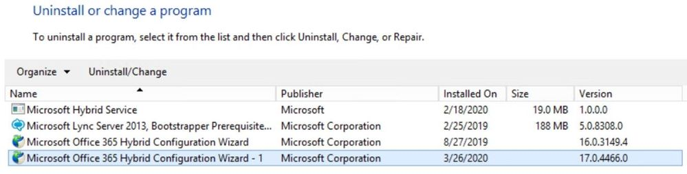
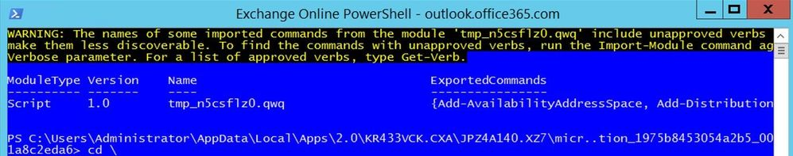
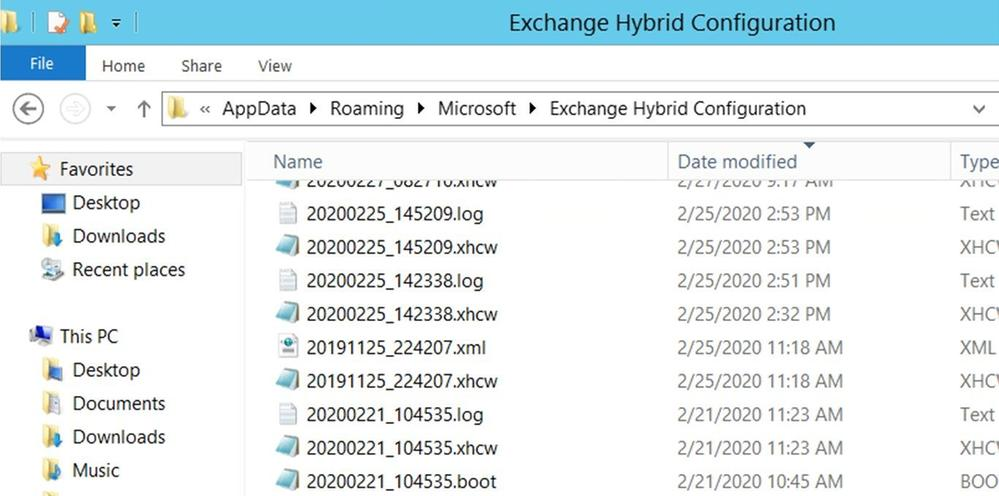

※ この記事は、Modern HCW (Hybrid Agent): troubleshooting like a pro の抄訳です。
多くの読者の方は、ハイブリッド構成ウィザード (HCW) のクラシック オプションを使用して自動的に構成されるクラシック ハイブリッド展開については詳しいのではないでしょうか。今回の記事では、モダン ハイブリッド構成 (モダン ハイブリッド エージェント) にフォーカスし、特にエージェントのトラブルシューティング方法をご紹介します。
クラシックとモダンというのは、HCW の以下の選択肢のことを意味します。
この 2 つの選択肢によって構成されるハイブリッド機能の比較については、こちらの 技術情報 をご参照ください。
モダン ハイブリッド構成について詳しく見ていく前に、HCW 全般に関する情報とトラブルシューティングのヒントをご紹介します。
最新バージョンの HCW を実行する
HCW は https://aka.ms/hybridwizard から実行するかもしくは Exchange 管理センターから実行して、常に最新のバージョンを実行してください。新しいバージョンではたくさんの問題が修正されています。
HCW のバージョンは様々な場所から確認できます。具体的には、HCW の画面右上、コントロール パネルの [プログラムと機能] の画面、HCW のログより確認できます。現在、HCW のビルド番号は 17.x で、もし 16.x を実行している場合は 17.x に自動更新されません。HCW を実行する必要があるときは、まずは最新の 17.x のバージョンにアップデートしてください。両方のバージョンは同じマシンに共存できますが、分かりにくくなるので共存させておくことは推奨しません。詳しくはこちらの ブログ記事 もご参照ください。

ハイブリッドの前提条件と HCW のよくある質問
ハイブリッドの前提条件と HCW のよくある質問を確認しておくことで、多くの問題の発生を防ぐことができます。
HCW に必要な管理者権限
HCW を実行するには 2 種類の管理者アカウントが必要です。
On-premises Exchange Account
このアカウントは Organization Management のメンバーである必要があります。もしアカウントを手動で変更して資格情報を入力した場合、入力した資格情報は HCW が移行エンドポイントを作る際に Test-MigrationServerAvailability コマンドで使用されます。
モダン HCW では、以下のように移行で使用するアカウントを指定することになります。
もし HCW のこのステップで “invalid username or password” エラーが発生した場合は、こちらの 技術情報 を参考にメールボックスの移行に必要な権限が付与されているかどうかの確認と、正しく「ドメイン名\ユーザー名」形式で資格情報が指定されているかご確認ください。
Office 365 Exchange Online Account
このアカウントは、Office 365 の全体管理者か Exchange 管理者である必要があります。
先進認証と基本認証 (Legacy Login) の 2 種類のログインを選択することが可能です。基本認証は廃止される予定 ですが、ログインに問題がある場合は基本認証を試してみることも有効です。基本認証は “Legacy Login” と記載されています。
HCW F12 診断ツール
HCW で F12 Diagnostic Tools セクションが表示されます。
このツールはトラブルシューティングで非常に役に立ちます。1 つずつ見ていきましょう。
Open Exchange Management Shell
PowerShell を起動してオンプレミスの Exchange サーバーに接続するショートカットです。
もし HCW でオンプレミスのコマンドが失敗したとき、HCW のログから失敗したコマンドをコピーしてきて、このショートカットから PowerShell を起動し、張り付けることで同じコマンドを実行することができます。これにより、オンプレミスの環境に起因した問題なのか、HCW 自体に起因した問題なのか切り分けができます。
Open Exchange Online PowerShell
PowerShell を起動して Exchange Online に接続するショートカットです。

HCW で Exchange Online のコマンドが失敗しているときにこのショートカットを利用すれば、失敗したコマンドを実行してみて同じように失敗するのかを見ることができます。
以下のエラーが発生した場合にも使用できます。
HCW のログで、Activity=Tenant Connection Validation のエントリーを見ることでこの問題の詳細を確認することができます。以下の内容は HCW が Exchange Online へ PowerShell で接続する際にプロキシ サーバーを使用しない動作であったことを示しています。
2020.05.29 20:37:37.469 10179 [Client=UX, HTTP GET=https://outlook.office365.com/, Thread=7] Request for https://outlook.office365.com/ does NOT go thru proxy
Open Log File
現在の HCW のログを開きます。メモ帳で開く時は、右端で折り返す機能を使わずに表示すると、表形式の内容がきれいに表示されます。<日時>.log 形式のファイル名になっており、HCW のメインのログです。時刻、HCW のバージョン、どのマシンから HCW を実行したか、OS と .NET Framework のバージョン、以下のオンプレミス組織の現在の構成などを確認できます。
- メールボックス データベース
- 承認済みドメイン
- リモート ドメイン
- ハイブリッド構成が既に構成されているか
- フェデレーション信頼が構成されているか (HCW で作成する必要がある場合)
- 送受信コネクタ
- 仮想ディレクトリ、など
以下のような Exchange Online の現在の構成も確認できます。
- Exchange Online の組織の構成
- 移行エンドポイント
- EOP のコネクタ
- 承認済みドメイン
- リモート ドメイン
- OnPremisesOrganization オブジェクトがあるかどうか
Create Support Package
これは私たちサポート部門にとって便利な機能です。サポートに提出できるように HCW のログを zip ファイルにまとめます。クリックすると、過去 24 時間のログにするか、または指定の日付範囲のログにするかの選択画面が表示されます。メールにすぐに添付できるように、ファイルをクリップボードにコピーする選択肢も用意されています。
Open Logging Folder
HCW を実行したマシン上の HCW のログがあるフォルダーを開くショートカットです。C:\Users\<admin>\AppData\Roaming\Microsoft\Exchange Hybrid Configuration というパスです。

フォルダー内には、主に以下のファイルがあります。
<日時>.log
上記で紹介したファイルです。
<日時>.xhcw
2 番目に重要なファイルが .xhcw ログです。これは XML 形式のログで、HCW によって実行された Exchange Online と Exchange サーバーに対するすべてのコマンド (Get-*、Set-*、Update-*、Remove-*、New-* など) が記録されています。
メモ帳で開いたら、<root> のような XML の開始タグを先頭に追加して、末尾にも </root> のような終了タグを追加し、.xml ファイルとして保存してください。そうすると以下のようにブラウザーで開いて内容を確認できます。
<日時>.boot
HCW の起動に関する情報を記録したログです。
.cc
ハイブリッド構成に関する追加情報を含んだ小さなログです。
<日時>.hybridconnector.log
ハイブリッド エージェントをインストールする場合の、ハイブリッド コネクターのセットアップに関するログです。そのため、クラシック ハイブリッドでは出力されません。
Open Process Folder
HCW の実行ファイルのあるパスがセットされた状態でコマンド プロンプトが起動します。HCW がクラッシュする場合や、”Object reference not set to an instance of an object” のような汎用的なエラーが発生したときに、ProcDump と組み合わせて使用することで役に立ちます。ProcDump のダウンロードや構文については こちら をご参照ください。通常は以下のようなコマンドで例外の情報を取得しますが、このようなトラブルシューティングが必要な時はサポートにお問い合わせください。
1 | procdump.exe -e 1 -f "" Microsoft.Online.CSE.Hybrid.App.exe |
モダン HCW におけるハイブリッド エージェント
ハイブリッド エージェントのアーキテクチャについて詳しくは こちら のブログ記事をご参照ください。
この機能では、Azure Application Proxy と同じ技術を使ったエージェントをインストールして Exchange サーバーを Exchange Online に対して公開します。これにより、外部 DNS や EWS の公開に伴うポートの開放などの問題点を気にせずに、空き時間情報の共有やメールボックスの移行を行えるようにします。ハイブリッド エージェントは各テナント専用に以下のフォーマットの URL を登録します。
<guid>.resource.mailboxmigration.his.msappproxy.net
この URL が Organization Relationship (組織の関係) や Intra Organization Connector、Mailbox Replication Service によって使用され、Exchange Online からオンプレミスへのリクエストが到達するようになります。この URL は Exchange Online からのみアクセスが可能です。Exchange Online ユーザーの空き時間情報のリクエストと、メールボックスの双方向の移動が、現在ハイブリッド エージェントによってサポートされています。
この URL が使用されている設定は、以下のコマンドで確認できます。
- Get-MigrationEndpoint (RemoteServer)
- Get-IntraOrganizationConnector (TargetSharingEpr)
- Get-OrganizationRelationship (TargetSharingEpr)
ハイブリッド エージェントの通信経路
端的に言えば、ハイブリッド エージェントは Exchange Online のサーバーとオンプレミスの Exchange サーバーの間に位置します。ハイブリッド エージェントは Exchange Online からの通信のみを受け入れます。
オンプレミスの Exchange サーバーへの通信経路は、簡単に表すと以下のようになります。
Exchange Online > ハイブリッド エージェント (External URL) > 負荷分散装置もしくは Exchange サーバー (Internal URL)
URL は Hybrid Management PowerShell モジュールの Get-HybridApplication コマンドで確認することができます。
この画面ショットから、External URL は https://<GUID>.resource.mailboxmigration.his.msappproxy.net (externalUrl パラメーター) で、 https://internalFQDN/ (internalUrl パラメーターの値で、この環境の場合は mirebm340vm.domain.lab) に通信がリレーされるように構成されていることが分かります。
External URL は公開 DNS サーバーで名前解決できる必要があります。nslookup や Resolve-DnsName コマンドを使って、ハイブリッド エージェントが Office 365 テナントに対して正しく公開されているか確認できます。
HCW ログの ConnectorRoute の値や、https://graph.microsoft.com/edu/$metadata#applications が含まれている Microsoft Graph のレスポンス内容からもチェックすることができます。
HCW ログの ConnectorRoute に記録されている externalUrl と internalUrl
HCW ログに記録される Microsoft Graph のレスポンス
もし Get-HybridApplication コマンドでアプリケーションの情報が何も返されない場合は、HCW を Modern Hybrid Topology オプションで再実行してください。再作成されます。
もしアプリケーションの情報が返されても指定されている Exchange サーバーが利用できない場合は、Update-HybridApplication コマンドを実行して別のサーバーまたはロード バランサーにリセットすることができます (Exchange 2013 以上のみがサポートされます)。
モダン HCW でのハイブリッド エージェントのセットアップ
HCW がハイブリッド エージェントをセットアップする際には 4 つのフェーズがあります。
- エージェント インストール パッケージをダウンロードする。
- ローカル コンピューターへエージェントをインストールする (Office 365 グローバル管理者の資格情報の入力を求められます)。
- プロキシ要求に使用される URL の作成を含む、Azure でのエージェントの登録を行う。URL の形式は
<uniqueGUID>.resource.mailboxmigration.his.msappproxy.netです。 - エージェントを使用して、Office 365 組織からオンプレミスの Exchange 組織への移行をテストする。
HCW 17.x では Hybrid Updater Agent のステップも追加され、以下のように HCW の UI で確認できます。
ハイブリッド エージェントがインストールされて動作しているか確認する
ハイブリッド エージェントはクライアント アクセス サーバーで動作しているかもしれませんし、DMZ 上で動作しているかもしれません。最初のステップは、そのマシン上でサービス (Microsoft Hybrid Service) とハイブリッド コネクターが起動しているかどうかを確認します。
ハイブリッドエージェントがアクティブ (登録されていて起動している) なのか非アクティブ (登録されていないか起動していない) なのかを確認する方法は複数あります。
- HCW を起動してモダン ハイブリッド構成を選択する (詳しくは こちら)
- Hybrid Management PowerShell モジュールの Get-HybridAgent コマンドを使用する (詳しくは こちら)
なおこのコマンドは、HCW の GUI が示す Exchange ハイブリッド エージェントのみではなく、パススルー認証の Azure Active Directory (Azure AD) Application Proxy connector の情報も返します。
- HCW のログから
https://graph.microsoft.com/edu/$metadata#connectorGroupsが含まれている Microsoft Graph の情報を探し、”Default group for Exchange Online” のコネクタを確認する
もし Exchange Online 用のコネクターが全く表示されなかったり、ステータスが inactive の場合、登録されていないか起動していないことを意味しています。
登録に関する問題の詳細を確認するには、前提条件 を確認して Test-HybridConnectibity コマンドを実行してください。
また こちら を参考に Microsoft Hybrid Service がインストールされており起動しているか確認してください。モダン ハイブリッド構成を選択することで HCW が自動でエージェントをインストール しますが、一般的ではないものの追加のエージェントをインストールする場合などに 手動 でインストールすることもできます。
モダン ハイブリッド構成からクラシック ハイブリッド構成に切り替えたり、プログラムと機能から Microsoft Hybrid Service を手動で削除すると、エージェントはアンインストールされます。
Microsoft Hybrid Service がインストールされており起動している場合、次に Hybrid Service ログを確認します。
サービスが起動しない場合も起動時のログを確認します。ログを有効にするには C:\Program Files\Microsoft Hybrid Service などサービスのインストール パスに移動します。フォルダー内に Microsoft.Online.EME.Hybrid.Agent.Service.exe.config というサービスの構成ファイルがあります。管理者権限で起動したメモ帳で構成ファイルを開き、<!— と --> を削除 (XML のコメントを解除) して保存します。
コメントを解除してログが有効になった構成ファイルは以下のようになります。
編集後、services.msc で Microsoft Hybrid Services を再起動してください。こちら の情報を参考にして接続テストを行ったら、以下の 2 つのフォルダーのログを確認します。
C:\programdata\Microsoft Hybrid Service\Loggingには、コネクターの登録と起動に関するログが出力されますC:\programdata\Microsoft\Microsoft Hybrid Service\Traceには、リクエストに関するログが出力されます
ハイブリッド エージェントがインストール、登録、起動されていることが確認できたら、機能の検証を行います。こちら の情報を参考に、空き時間情報とメールボックスの移行を検証することができます。Test-MigrationServerAvailability コマンドを実行してリクエストのカウンターが増加すれば、コネクターは動作しています。
次に確認するのは、ハイブリッド エージェントのマシンから Exchange サーバーにリクエストが到達しているかどうかです。EWS (MRSproxy.svc) リクエストに関して、主に 3 つのログがあります。
- HTTPerr ログ:
%SystemRoot%\System32\LogFiles\HTTPERR - Default Web Site (DWS) の IIS ログ:
%SystemDrive%\inetpub\logs\LogFiles\W3SVC1 - EWS の HTTPProxy ログ (Exchange 2013 以上):
%ExchangeInstallPath%Logging\HttpProxy\Ews
これらのログの使い方に関するヒントを紹介します。
- 通信が失敗した時刻のログを横断的に見る。 (各ログの時刻は UTC で表記されています)
- 失敗した通信のステータス コードは 200 ではない。 (もし 200 のログがあれば、それは失敗した通信のログではない)
- 失敗した通信の情報が HTTPerr ログに記録されている場合、おそらく IIS ログと HTTPProxy ログに関連するログはありません。HTTPerr ログに記録された原因や IIS の構成ミスがないか確認する必要があります。
- 失敗した通信の情報が IIS ログに記録されている場合、そのステータス コードで IIS の失敗した要求トレース を実行したり、さらに詳細が HTTPProxy ログに記録されていないか確認したりします。
Test-MigrationServerAvailability コマンドを実行すると、mrsproxy.svc へのログが 5 つくらい IIS ログに記録されます。2 つは 401 のステータスで、他に 200 のステータスのログが記録されます。仮に Test-MigrationServerAvailability のエラーが 503 Service Unavailable だったとしたら、IIS ログから 503 のログを探すことになります。IIS ログの 503 のログの例は以下の通りです。
2020-02-20 06:57:42 192.168.2.50 POST /EWS/mrsproxy.svc - 443 miry\administrator 4.43.0.1 - 503 0 0 125
上記のようなエラーがあったら、HTTPProxy ログや IIS の失敗した要求トレースを使用してより詳細なエラーの情報を調査する必要があります。
Test-MigrationServerAvailability コマンドのよくあるエラーについては こちら のブログ記事を参照してください。
今回紹介した情報がトラブルシューティングの際にお役に立てば幸いです。